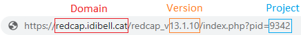
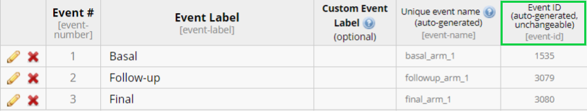

Introduction
The REDCapDM package allows users to read data exported directly from REDCap or via API connection. It also allows users to process the previously downloaded data, create reports of queries such as outliers or missing values and track the identified queries.
Functions
Functions included in the package:
redcap_data(): reads data.rd_transform(): processes data.rd_rlogic(): transforms REDCap logic into R logic.rd_insert_na(): allows a manual entry of a missing value in specific variables using a filter.rd_query(): identifies queries.rd_event(): identifies missing events.check_queries(): tracks queries.
Built-in dataset
For the following examples, we will use a random sample of the COVICAN study which is included in the package. COVICAN is an international, multicentre cohort study of cancer patients with COVID-19 to describe the epidemiology, risk factors, and clinical outcomes of co-infections and superinfections in onco-hematological patients with COVID-19.
We can load the built-in dataset by typing:
data(covican)The structure of this dataset is:
List of 3
$ data :'data.frame': 342 obs. of 56 variables:
$ dictionary:'data.frame': 21 obs. of 18 variables:
$ event_form:'data.frame': 9 obs. of 3 variables:The first element in the list is a data frame containing all the data. The second element is a data frame with the information in the dictionary of the project about each field. The third and final element is a data frame containing the correspondence of each event with each form.
Some of the variables in the dataset are:
| Name | Description | Categories |
|---|---|---|
| record_id | Identifier of each record | |
| redcap_event_name | Auto-generated name of the events | |
| redcap_data_access_group | Auto-generated name of each center | |
| inc_1 | Patients older than 18 years | No ; Yes |
| inc_2 | Cancer patients | No ; Yes |
| inc_3 | Diagnosed of COVID-19 | No ; Yes |
| exc_1 | Solid tumour remission >1 year | No ; Yes |
| screening_fail_crit | Indicator of non-compliance with inclusion and exclusion criteria | Compliance ; Non-compliance |
| d_birth | Date of birth (y-m-d) | |
| d_admission | Date of first visit (y-m-d) | |
| age | Age | |
| dm | Indicator of diabetes | No ; Yes |
| type_dm | Type of diabetes | No complications ; End-organ diabetes-related disease |
| copd | Indicator of chronic pulmonary disease | No ; Yes |
| fio2 | Fraction of inspired oxygen (%) | |
| available_analytics | Indicator of blood test available | No ; Yes |
| potassium | Potassium (mmol/L) | |
| resp_rate | Respiratory rate (bpm) | |
| leuk_lymph | Indicator of leukemia or lymphoma | No ; Yes |
| acute_leuk | Indicator of acute leukemia | No ; Yes |
Examples
The package structure can be divided into three main components: reading raw data, processing data and identifying queries. Typically, after collecting data in REDCap, we will have to follow this three components in order to have a final validated dataset for analysis. We will provide a complete user guide on how to perform each one of these steps using the package’s functions. For the processing of the data and query identification, we will use the built-in dataset as an example.
Read data
redcap_data
The redcap_data() function allows users to easily import
data from a REDCap project into R for analysis.
To read exported data from REDCap, use the arguments
data_path and dic_path to, respectively,
describe the path of the R file and the REDCap project’s dictionary:
dataset <- redcap_data(data_path = "C:/Users/username/example.r",
dic_path = "C:/Users/username/example_dictionary.csv")Note: The R and CSV files exported from REDCap must be located in the same directory.
If the REDCap project is longitudinal (contains more than one event) then a third element should be specified with the correspondence of each event with each form of the project. This csv file can be downloaded in the REDCap of the project following these steps: Project Setup < Designate Instruments for My Events < Download instrument-event mappings (CSV).
dataset <- redcap_data(data_path = "C:/Users/username/example.r",
dic_path = "C:/Users/username/example_dictionary.csv",
event_path = "C:/Users/username/events.csv")Note: if the project is longitudinal and the event-form file is not
provided using the event_path argument, some steps of the
processment can not be performed.
Another way to read data exported from a REDCap project is using an
API connection. To do this, we can use the arguments uri
and token which respectively refer to the uniform resource
identifier of the REDCap project and the user-specific string that
serves as the password:
dataset_api <- redcap_data(uri = "https://redcap.idibell.cat/api/",
token = "55E5C3D1E83213ADA2182A4BFDEA")In this case, there is no need to specify the event-form file since the function will download it automatically using the API connection, if the project is longitudinal.
Warning: Please keep in mind that the API token gives you special access to the REDCap project and that it should not be shared with other people.
This function returns a list with 3 elements (imported data, dictionary and event-form mapping) which can then be used for further analysis or visualization.
Process
rd_transform
The main function involved in the processing of the data is
rd_transform(). This function is used to process the REDCap
data read into R using the redcap_data(), as described
above. Using the arguments of the function we can perform different type
of transformations of our data.
As previously stated, we will use the built-in dataset
REDCapDM::covican as an example.
Data transformation
The only necessary elements that must be provided are the dataset to
be transformed and the corresponding dictionary. If the project is
longitudinal, as in the case of REDCapDM::covican, also the
event-form dataset should be specified. These elements can be specified
directly using the output of the redcap_data() function or
separately in different arguments.
#Option A: list object
covican_transformed <- rd_transform(covican)
#Option B: separately with different arguments
covican_transformed <- rd_transform(data = covican$data,
dic = covican$dictionary,
event_form = covican$event_form)
#Print the results of the transformation
covican_transformed$results1. Removing selected variables
2. Deleting variables that contain some patterns
3. Recalculating calculated fields and saving them as '[field_name]_recalc'
| Total calculated fields | Non-transcribed fields | Recalculated different fields |
|:-----------------------:|:----------------------:|:-----------------------------:|
| 2 | 0 (0%) | 1 (50%) |
| field_name | Transcribed? | Is equal? |
|:-------------------:|:------------:|:---------:|
| age | Yes | FALSE |
| screening_fail_crit | Yes | TRUE |
4. Transforming checkboxes: changing their values to No/Yes and changing their names to the names of its options. For checkboxes that have a branching logic, when the logic is missing their values will be set to missing
Table: Checkbox variables advisable to be reviewed
| Variables without any branching logic |
|:-------------------------------------:|
| type_underlying_disease |
5. Replacing original variables for their factor version
6. Converting every branching logic in the dictionary into R logicThis function will return a list with the transformed dataset, dictionary, event_form and the output of the results of the transformation.
As we can see, there are several steps in the transformation:
-
Elimination of variables: we can specify any variable in the
dataset which we want to remove using the argument
delete_vars, as explained later. -
Elimination of variables containing some pattern: by default, the
pattern that the function looks for is ’_complete’ and ’_timestamp’. We
can specify any other pattern using the argument
delete_pattern, as explained later. -
Recalculation of REDCap calculated fields: it finds all the
calculated fields and recalculates them using the REDCap logic specified
in the calculation field translated into R. The recalculated variable is
saved as the original name adding ’_recalc’ at the end. It can happen
that the logic found contains some specific smart-variables or other
complex structures which the function is not able to transcribe. With
the summary found in
resultswe can see how many calculated fields have been found, if they have been transcribed and, if that is the case, if the recalculated variable is equal to the original one. -
Checkbox transformation: by default, it changes the names of the
checkboxes to the name of its corresponding option and the name of their
labels to ‘No/Yes’. If we want to specify another pair of label names we
can specify them using the
checkbox_labelsargument as we will see. Furthermore, if the checkbox contains a branching logic, when this logic evaluated returns a missing value (some of the variables specified in it are missing) the values of the checkbox will be set to missing. -
Replacement of the original variable by its factor version:
REDCap creates two versions of the variables in the dataset for
multiple-choice fields: a numerical one with the number that corresponds
to each category and a factor one containing the labels of each
category. In this step, we will replace the original variables with
their factor versions, except for redcap_event_name and
redcap_data_access_group, for which we will keep both versions.
We can specify other variables that we do not want to transform to
factor using the argument
exclude_to_factorwhich we will see later. - Transformation of the branching logic: by default, every branching logic contained in the dictionary is presented in REDCap logic. In this step, we will convert each branching logic into R logic in order to apply this information when needed. For example, we will use it to properly identify missing values in variables with a branching logic, as we will see later in the vignette.
In this case, we do not have any variable with the pattern ’_complete’ and ’_timestamp’ since the built-in dataset only contains a sample of the variables of the project. All REDCap projects, when downloaded, contain one variable with the pattern ’_complete’ for each form indicating if the form has been marked as incomplete/unverified/completed. Also, if the project contains some survey then variables ending with ’_timestamp’ are also generated automatically. In general, we do not need this information so these variables are removed by default.
Note: If the REDCap project is longitudinal and the event-form is not specified, this step will not be executed.
In the example, we can see how there are two REDCap calculated fields, both have been transcribed successfully and the recalculation of the age does not match the original calculated variable from REDCap.
Note: If the REDCap project is longitudinal and the event-form is not specified, the evaluations of the branching logic will not be done.
For example, let’s explain the transformation that undergo the
variables corresponding to the checkbox field of the type of underlying
disease. The variables were named originally as
_type_underlying_disease__0 and
_type_underlying_disease__1 although the name of the options
are ‘Haematological cancer’ and ‘Solid tumour’. Thus, in the transformed
dataset, the names are converted to
type_underlying_disease_haematological_cancer and
type_underlying_disease_solid_tumour. Then, since this checkbox
variable does not have a branching logic, the variable is advised to be
reviewed by the user in the results, as seen above. When
reviewed we could use an additional function rd_insert_na()
to insert the necessary missing values into this variable, as we will
explain later. If a branching logic was found for this variable,
rd_transform will insert automatically the missing values
when the logic is not satisfied and no further transformation will be
needed.
Data transformation and classification by event
Additionally, we can change the final structure of the transformed
dataset. For example, we can split it by each event. This can be done by
specifying in the final_format argument that we want our
data to be split by event.
dataset <- rd_transform(covican,
final_format = "by_event")
#To print the results
dataset$results1. Removing selected variables
2. Deleting variables that contain some patterns
3. Recalculating calculated fields and saving them as '[field_name]_recalc'
| Total calculated fields | Non-transcribed fields | Recalculated different fields |
|:-----------------------:|:----------------------:|:-----------------------------:|
| 2 | 0 (0%) | 1 (50%) |
| field_name | Transcribed? | Is equal? |
|:-------------------:|:------------:|:---------:|
| age | Yes | FALSE |
| screening_fail_crit | Yes | TRUE |
4. Transforming checkboxes: changing their values to No/Yes and changing their names to the names of its options. For checkboxes that have a branching logic, when the logic is missing their values will be set to missing
Table: Checkbox variables advisable to be reviewed
| Variables without any branching logic |
|:-------------------------------------:|
| type_underlying_disease |
5. Replacing original variables for their factor version
6. Converting every branching logic in the dictionary into R logic
7. Final arrangment of the data by eventNow, a final step in the transformation has been added, which consists in splitting the data according to the events in the study. So, now the transformed dataset found in the output of the function is a tibble object with as many data frames as events there are in the REDCap project:
dataset$data
#> # A tibble: 2 × 3
#> events vars df
#> <chr> <list> <list>
#> 1 baseline_visit_arm_1 <chr [31]> <df [190 × 36]>
#> 2 follow_up_visit_da_arm_1 <chr [4]> <df [152 × 9]>The column df of the nested dataframe is a list
containing the data corresponding to each event. Also the variables of
the forms that are found in each event are reported in the column
vars.
Note: If the REDCap project is longitudinal and the event-form is not specified, this transformation is not posible.
Data transformation and classification by form
Another option is to split the data by the forms found in the REDCap
project. We will use also the final_format argument to
specify that we want to split data by form:
dataset <- rd_transform(covican,
final_format = "by_form")
#To print the results
dataset$results1. Removing selected variables
2. Deleting variables that contain some patterns
3. Recalculating calculated fields and saving them as '[field_name]_recalc'
| Total calculated fields | Non-transcribed fields | Recalculated different fields |
|:-----------------------:|:----------------------:|:-----------------------------:|
| 2 | 0 (0%) | 1 (50%) |
| field_name | Transcribed? | Is equal? |
|:-------------------:|:------------:|:---------:|
| age | Yes | FALSE |
| screening_fail_crit | Yes | TRUE |
4. Transforming checkboxes: changing their values to No/Yes and changing their names to the names of its options. For checkboxes that have a branching logic, when the logic is missing their values will be set to missing
Table: Checkbox variables advisable to be reviewed
| Variables without any branching logic |
|:-------------------------------------:|
| type_underlying_disease |
5. Replacing original variables for their factor version
6. Converting every branching logic in the dictionary into R logic
7. Final arrangment of the data by formAs before, a final step in the transformation has been added, which is to split the data according to the forms in the study. Thus, the transformed dataset will now be a tibble object with as many data frames as forms there are in the REDCap project:
dataset$data
#> # A tibble: 7 × 4
#> form events vars df
#> <chr> <list> <list> <list>
#> 1 inclusionexclusion_criteria <chr [1]> <glue [7]> <df [190 × 11]>
#> 2 demographics <chr [1]> <glue [4]> <df [190 × 9]>
#> 3 comorbidities <chr [1]> <glue [5]> <df [190 × 10]>
#> 4 cancer <chr [1]> <glue [11]> <df [190 × 16]>
#> 5 vital_signs <chr [2]> <glue [2]> <df [342 × 7]>
#> 6 laboratory_findings <chr [2]> <glue [2]> <df [342 × 7]>
#> 7 microbiological_studies <chr [1]> <glue [1]> <df [190 × 6]>Note: If the REDCap project is longitudinal and the event-form is not specified, this transformation is not posible.
Additional arguments
There are other arguments which can be used to customize some of the transformation steps that the function performs by default:
checkbox_labels: specifies the name of the categories for the checkbox variables. Default is ‘No/Yes’, but we can change it to ‘N/Y’:
dataset <- rd_transform(covican,
checkbox_labels = c("N", "Y"))checkbox_na: logical argument involved in the transformation of checkbox variables. For checkbox variables that have a branching logic specified, when the logic is missing the values of the checkbox will be always converted to missing. Additionally, if this argument is true then also when the branching logic isn’t satisfied their values will be converted to missing.
dataset <- rd_transform(covican,
checkbox_na = TRUE)exclude_recalc: specifies the name of the variables that we do not want to be recalculated. For example, if we do not want to recalculate the variable age:
dataset <- rd_transform(covican,
exclude_recalc = "age")This argument is useful to reduce the time of execution of the function. For calculated fields with complex logic involving variables in different events the recalculation operation may be time consuming, so we can prevent the function to recalculate them with this argument.
exclude_to_factor: specifies the name of the variables that we do not want to transform into a factor. For example, if we want the variable dm to keep its original numeric version:
dataset <- rd_transform(covican,
exclude_to_factor = "dm")delete_vars: every variable specified in this argument will be removed from the dataset. For example, we can change the argument to remove the date of birth variable from the dataset:
dataset <- rd_transform(covican,
delete_vars = "d_birth")delete_pattern: every variable containing the strings
specified in this argument will be removed from the dataset. By default,
the value of delete_pattern is ‘_complete’. For example, we
can change the argument to remove the inclusion and exclusion criteria
variables from the dataset (variables that contain ‘inc_’ and ‘exc_’ in
their names):
dataset <- rd_transform(covican,
delete_pattern = c("inc_", "exc_"))which_event: in the transformation by event explained earlier, we can specify whether we want to keep only one out of all the events in the dataset. For example, if we only want to keep the baseline visit:
dataset <- rd_transform(covican,
final_format = "by_event",
which_event = "baseline_visit_arm_1")which_form: in the transformation by form explained earlier, we can specify whether we want to keep only one of the forms. For example, if we only want to keep the demographic form:
dataset <- rd_transform(covican,
final_format = "by_form",
which_form = "demographics")
data <- dataset$data
names(data)[1] "record_id" "redcap_event_name"
[3] "redcap_data_access_group" "redcap_event_name.factor"
[5] "redcap_data_access_group.factor" "d_admission"
[7] "d_birth" "age"
[9] "age_recalc" wide: in the transformation by form, we can specify that we want each of the split datasets to be in a wide format. This is useful if the form appears in more than one event (or in a repeated event). Then, we will only have one row per patient and all the variables of the form will be in columns repeated by each event in the order that the events appear in REDCap. For example, if we want to keep only the laboratory findings in a wide format we can do:
dataset <- rd_transform(covican,
final_format = "by_form",
which_form = "laboratory_findings",
wide = TRUE)
head(dataset$data)
#> # A tibble: 6 × 5
#> record_id available_analytics_1 available_analytics_2 potassium_1 potassium_2
#> <chr> <fct> <fct> <dbl> <dbl>
#> 1 100-6 Yes Yes 4.3 4.5
#> 2 100-13 Yes Yes 3.66 4.1
#> 3 100-16 Yes No 4.04 NA
#> 4 100-31 Yes NA 4.58 NA
#> 5 100-34 Yes No 3.48 NA
#> 6 100-36 Yes No 4.09 NArd_rlogic
This function transforms the REDCap logic into logic that can be
evaluated in R. It returns both the transformed logic and the result of
the evaluation of the logic. This function is used in the
rd_transform() to recalculate the calculated fields and
convert the branching logics, but it may also be useful to use it in
other circunstances. Let’s see how it transforms the logic of one of the
calculated fields in the built-in dataset:
logic_trans <- rd_rlogic(covican,
logic = "if([exc_1]='1' or [inc_1]='0' or [inc_2]='0' or [inc_3]='0',1,0)",
var = "screening_fail_crit")
str(logic_trans)List of 2
$ rlogic: chr "ifelse(data$exc_1=='1' | data$inc_1=='0' | data$inc_2=='0' | data$inc_3=='0',1,0)"
$ eval : num [1:342] 0 NA 0 NA 0 NA 0 NA 0 NA ...rd_insert_na
This function sets some values of a variable to missing if a certain
logic is fulfilled. It can be used as a complementary function for
rd_transform(), for example, to change the values of those
checkboxes that do not have a branching logic, as mentioned earlier. For
instance, we can perform a raw transformation of our data, as in section
4.2.1.1, and then use this function to set the values of the checkbox
type_underlying_disease_haematological_cancer to missing when
the age is less than 65 years old:
#Raw transformation of the data:
dataset <- rd_transform(covican)
data <- dataset$data
#Before inserting missings
table(data$type_underlying_disease_haematological_cancer)
No Yes
103 87
#Run the function
data2 <- rd_insert_na(dataset,
event_form = covican$event_form,
vars = "type_underlying_disease_haematological_cancer",
filter = "age < 65")
#After inserting missings
table(data2$type_underlying_disease_haematological_cancer)
No Yes
65 50 Recall that both the variable to be transformed (age) and the variable included in the filter (type_underlying_disease_haematological_cancer) are in the same event. In the contrary, if the variable to be transformed and the filter didn’t have any event in common then the transformation would give an error. Furthermore, if the variable to be transformed was in more events than the filter, only the rows of the events in common would be converted.
Queries
Queries are very important to ensure the accuracy and reliability of a REDCap dataset. The collected data may contain missing values, inconsistencies, or other potential errors that need to be identified in order to correct them later.
For all the following examples we will use the raw transformed data:
covican_transformed.
rd_query
The rd_query() function allows users to generate queries
by using a specific expression. It can be used to identify missing
values, values that fall outside the lower and upper limit of a variable
and other types of inconsistencies.
Output
First, we will examine the output of this function. When the
rd_query() function is executed, it returns a list that
includes a data frame with all the queries identified and a second
element with a summary of the number of generated queries in each
specified variable for each expression applied:
| Identifier | DAG | Event | Instrument | Field | Repetition | Description | Query | Code |
|---|---|---|---|---|---|---|---|---|
| 100-58 | Hospital 11 | Baseline visit | Comorbidities | copd |
|
Chronic obstructive pulmonary disease | The value is NA and it should not be missing | 100-58-1 |
| 105-11 | Hospital 5 | Baseline visit | Comorbidities | copd |
|
Chronic obstructive pulmonary disease | The value is NA and it should not be missing | 105-11-1 |
| 105-56 | Hospital 5 | Baseline visit | Comorbidities | copd |
|
Chronic obstructive pulmonary disease | The value is NA and it should not be missing | 105-56-1 |
| 112-15 | Hospital 10 | Baseline visit | Comorbidities | copd |
|
Chronic obstructive pulmonary disease | The value is NA and it should not be missing | 112-15-1 |
| 117-11 | Hospital 2 | Baseline visit | Comorbidities | copd |
|
Chronic obstructive pulmonary disease | The value is NA and it should not be missing | 117-11-1 |
| 117-22 | Hospital 2 | Baseline visit | Comorbidities | copd |
|
Chronic obstructive pulmonary disease | The value is NA and it should not be missing | 117-22-1 |
| Variables | Description | Event | Query | Total |
|---|---|---|---|---|
| copd | Chronic obstructive pulmonary disease | Baseline visit | The value should not be missing | 6 |
The data frame is designed to aid users in locating each query in their REDCap project. It includes information such as the record identifier, the Data Access Group (DAG), the event in which each query can be found, along with the name and the description of the analyzed variable and a brief description of the query.
Let’s see some examples of the usability of the function in generating different types of queries.
Missings
If we want to identify missing values in the variables copd
and age in the raw transformed data, a list of required
arguments needs to be supplied. We must use the variables
argument to specify the variables from the database that will be
examined and the expression argument to describe the
expression that will be applied to those variables, in this case
‘is.na(x)’ to detect missing values where x represents the variable
itself. Additionaly, we must use the data and
dic arguments to indicate the R objects containing the
REDCap data and dictionary, respectively. If the REDCap project presents
a longitudinal design, we should also specify the event in which the
described variables are present through the use of the
event argument:
example <- rd_query(covican_transformed,
variables = c("copd", "age"),
expression = c("is.na(x)", "is.na(x)"),
event = "baseline_visit_arm_1")
# Printing results
example$results| Variables | Description | Event | Query | Total |
|---|---|---|---|---|
| copd | Chronic obstructive pulmonary disease | Baseline visit | The value should not be missing | 6 |
| age | Age | Baseline visit | The value should not be missing | 5 |
In this case, we can observe that there are 6 missing values in the copd variable and 5 missing values in age.
Missings of variables with a branching logic
Another example is when we try to identify missing values in
variables where a branching logic is employed. In this scenario, when
the conditions of the branching logic are not satisfied, by definition,
all of the values should be missing and thus queries for this specific
missing values (conditions not met) should not be reported. To adress
this, the function, when working with raw data, follows a two-step
process. Firstly, it transforms the branching logic associated with the
specified variable. Then, it applies this transformed logic during the
query generation process. However, if the dataset has already been
transformed using the rd_transform() function beforehand,
the function will automatically apply the previously transformed
branching logic.
In both scenarios, if a variable contains branching logic that cannot
be converted from REDCap logic to R logic, the function will issue a
warning. The warning message will advise the user to review the
results element of the output for more information. This is
to indicate that there might be potential issues or limitations with the
conversion process for that specific variable’s branching logic:
example <- rd_query(covican_transformed,
variables = c("age", "copd", "potassium"),
expression = c("is.na(x)", "is.na(x)", "is.na(x)"),
event = "baseline_visit_arm_1")Warning: The branching logic of the following variables could not be converted into R logic:
- potassium
Check the results element of the output(...$results) for details.
# Printing results
example$results| Variables | Description | Event | Query | Total | Branching logic |
|---|---|---|---|---|---|
| potassium | Potassium | Baseline visit | The value should not be missing | 31 | [available_analytics][current-instance]=‘1’ |
| copd | Chronic obstructive pulmonary disease | Baseline visit | The value should not be missing | 6 |
|
| age | Age | Baseline visit | The value should not be missing | 5 |
|
Based on the information provided, in addition to the missing values
of the age and copd variables already identified,
there are 31 missing values in the potassium variable. The
branching logic associated with this variable,
[available_analytics][current-instance]=‘1’, contains a
smart variable [current-instance], which cannot be directly
transformed into R logic.
To address this issue and correctly identify missing values only when available_analytics has the value 1, the filter argument can be utilized. By specifying the condition within the branching logic, you can ensure that the filtering process fulfills this condition.
It is worth noting that during the transformation process, the value 1 of the available_analytics variable was changed to Yes due to it being a factor. Therefore, when implementing the filter, you need to consider this transformed value rather than the original one. This ensures that the condition is accurately applied and missing values are appropriately identified based on the desired criteria.
example <- rd_query(covican_transformed,
variables = c("potassium"),
expression = c("is.na(x)"),
event = "baseline_visit_arm_1",
filter = c("available_analytics=='Yes'"))Warning: The branching logic of the following variables could not be converted into R logic:
- potassium
Check the results element of the output(...$results) for details.
# Printing results
example$results| Variables | Description | Event | Query | Total | Branching logic |
|---|---|---|---|---|---|
| potassium | Potassium | Baseline visit | The value should not be missing | 21 | [available_analytics][current-instance]=‘1’ |
The total number of missing values changes when we use the
filter argument, the variable potassium now
presents 21 missing values instead of the previous 31 cases identified.
This means that we were identifying 10 missing values in which
available_analytics did not have the value Yes and,
therefore, should not be considered as missing values.
Note: The filter argument is treated as a vector, which
means that we can add a filter to each specified variable. Also, even if
this argument is used to apply the branching logic condition, the
warning about the presence of unconverted branching logic will still be
displayed. In this specific case, you can safely ignore this
warning.
Expressions
Up until this point, we have illustrated examples where the
expression applied is used to detect missing values. But, as previously
mentioned, the rd_query() function is also able to identify
outliers or observations that fulfill a specific condition. Hence, to
identify, for example, all the observations where age is
greater than 70, we should use the expression argument
again specifying ‘x>70’:
example <- rd_query(variables="age",
expression="x>70",
event="baseline_visit_arm_1",
dic=covican_transformed$dictionary,
data=covican_transformed$data)
# Printing results
example$results| Variables | Description | Event | Query | Total |
|---|---|---|---|---|
| age | Age | Baseline visit | The value should not be greater than 70 | 76 |
We can add other variables with other specific expressions in the
same function because it is designed to treat the arguments
variables and expression as vectors, so that
the element at position n of expression is applied
to the element at position n of variables.
For example, if we want to identify all the observations where age is greater than 70 and all the observations where copd is ‘Yes’ we shall use:
example <- rd_query(covican_transformed,
variables=c("age", "copd"),
expression=c("x > 70", "x == 'Yes'"),
event="baseline_visit_arm_1")
# Printing results
example$results| Variables | Description | Event | Query | Total |
|---|---|---|---|---|
| age | Age | Baseline visit | The value should not be greater than 70 | 76 |
| copd | Chronic obstructive pulmonary disease | Baseline visit | The value should not be equal to ‘Yes’ | 21 |
In a more complex scenario, for example, to identify all the observations where age is greater than 70, less than 80, or it is a missing value we shall use the following expression:
example <- rd_query(covican_transformed,
variables="age",
expression="(x>70 & x<80) | is.na(x)",
event="baseline_visit_arm_1")
# Printing results
example$results| Variables | Description | Event | Query | Total |
|---|---|---|---|---|
| age | Age | Baseline visit | The value should not be (greater than 70 and less than 80) or missing | 54 |
Special cases
Same expression for all variables
In order to evaluate the same expression for all variables, the user
should supply just a single element for expression:
example <- rd_query(covican_transformed,
variables = c("copd","age","dm"),
expression = "is.na(x)",
event = "baseline_visit_arm_1")Warning: Due to the greater number of variables compared to expressions, the
same expression has been applied to all of them.
# Printing results
example$results| Variables | Description | Event | Query | Total |
|---|---|---|---|---|
| copd | Chronic obstructive pulmonary disease | Baseline visit | The value should not be missing | 6 |
| age | Age | Baseline visit | The value should not be missing | 5 |
| dm | Diabetes (treated with insulin or antidiabetic … | Baseline visit | The value should not be missing | 5 |
The function issues a warning every time the same expression is applied to all variables to ensure that the user did not make a mistake when providing the information for each argument.
Not defining an event
Another special case is when the data analysed corresponds to a REDCap longitudinal project, but the event argument of the function is not defined.
There are two possibilities here:
- With event-form: the function automatically detects in which events the variable is collected and generates queries for those events.
- Without event-form: the function generates queries for all events present in the dataset.
example <- rd_query(covican_transformed,
variables = "copd",
expression = "is.na(x)")
# Printing results
example$results| Variables | Description | Event | Query | Total |
|---|---|---|---|---|
| copd | Chronic obstructive pulmonary disease | Baseline visit | The value should not be missing | 6 |
We get the same result as if we had used the event
argument.
my_list <- subset(covican_transformed, !names(covican_transformed) %in% "event_form")
example <- rd_query(my_list,
variables = "copd",
expression = "is.na(x)")Warning: No event or event-form has been specified. Therefore, the function
will automatically consider observations from all events in the dataset. Ensure
that the selected variable(s) is(are) collected in all specified events. This
will avoid overestimating the number of queries.
# Printing results
example$results| Variables | Description | Event | Query | Total |
|---|---|---|---|---|
| copd | Chronic obstructive pulmonary disease | Follow up visit day 14+/-5d | The value should not be missing | 152 |
| copd | Chronic obstructive pulmonary disease | Baseline visit | The value should not be missing | 6 |
As we can see, there are 152 new missing values in the follow-up visit because the variable copd it is only present in the baseline visit. Thus, it might result in an overestimation of the number of missing values, as the function considers all the events of the study if no event is specified.
The function will issue a warning if it detects that the REDCap
project contains multiple events, the event-form mapping is not
specified and the event argument is not specified.
Additional arguments
variable_names, query_name, instrument
These arguments allow users to customize the data frame returned by
the function. We can change the variables names using the
variables_names argument, alter the description of the
query using the query_name argument or even change the name
of the instrument using the instrument argument:
example<- rd_query(covican_transformed,
variables = c("copd"),
variables_names = c("Chronic obstructive pulmonary disease (Yes/No)"),
expression = c("is.na(x)"),
query_name = c("COPD is a missing value."),
instrument = c("Admission"),
event = "baseline_visit_arm_1")Output:
| Identifier | DAG | Event | Instrument | Field | Repetition | Description | Query | Code |
|---|---|---|---|---|---|---|---|---|
| 100-58 | Hospital 11 | Baseline visit | Admission | copd |
|
Chronic obstructive pulmonary disease (Yes/No) | COPD is a missing value. | 100-58-1 |
negate
This argument can be used to negate the expression applied to the
variables. For example, if we want to identify all the non missing
values of the variable copd, we can apply the expression
‘is.na(x)’ which normally would report the missing values and add
negate = TRUE, so the result will be the number of non
missing values in copd:
example <- rd_query(covican_transformed,
variables = "copd",
expression = "is.na(x)",
negate = TRUE,
event = "baseline_visit_arm_1")
# Printing results
example$results| Variables | Description | Event | Query | Total |
|---|---|---|---|---|
| copd | Chronic obstructive pulmonary disease | Baseline visit | The value should be missing | 184 |
There are 184 non missing values in the variable copd.
addTo
In order to keep all queries in the same R object, we can use the
addTo argument to specify the output of another query
dataset.
example2 <- rd_query(covican_transformed,
variables = "age",
expression = "is.na(x)",
event = "baseline_visit_arm_1",
addTo = example)
# Printing results
example2$results| Variables | Description | Event | Query | Total |
|---|---|---|---|---|
| copd | Chronic obstructive pulmonary disease | Baseline visit | The value should be missing | 184 |
| age | Age | Baseline visit | The value should not be missing | 5 |
We have joined our former output of 184 non missing values in the variable copd with the new query dataset composed by the 5 missing values of the variable age.
report_title
To customize the title of the summary of queries, we can use the
report_title argument:
example <- rd_query(covican_transformed,
variables = c("copd", "age"),
expression = c("is.na(x)", "x<20"),
event = "baseline_visit_arm_1",
report_title = "Missing COPD values in the baseline event")
# Printing results
example$results| Variables | Description | Event | Query | Total |
|---|---|---|---|---|
| copd | Chronic obstructive pulmonary disease | Baseline visit | The value should not be missing | 6 |
The default title of the summary is “Report of queries” but we have changed it to “Missing COPD values in the baseline event”.
report_zeros
By default, the function will only report, in the summary of queries,
variables with at least one query and will omit those with zero queries.
To include these omitted variables in the summary, we can use the
report_zeros argument:
example <- rd_query(covican_transformed,
variables = c("copd", "age"),
expression = c("is.na(x)", "x < 20"),
event = "baseline_visit_arm_1",
report_zeros = TRUE)
# Printing results
example$results| Variables | Description | Event | Query | Total |
|---|---|---|---|---|
| copd | Chronic obstructive pulmonary disease | Baseline visit | The value should not be missing | 6 |
| age | Age | Baseline visit | The value should not be less than 20 | 0 |
The variable age is reported in the summary in spite of not having any queries identified.
by_dag
If the REDCap project has Data Access Groups (DAGs), it might be of
our interest to report the summary by each one of the DAGs. To do that,
we can use the by_dag argument:
example <- rd_query(covican_transformed,
variables = c("copd", "age"),
expression = c("is.na(x)", "x>60"),
event = "baseline_visit_arm_1",
by_dag = TRUE)Now we can choose to see the report of a specific DAG, for example, the summary of the generated queries for the Hospital 2:
# Printing results
example$results$`Hospital 2`| DAG | Variables | Description | Event | Query | Total |
|---|---|---|---|---|---|
| Hospital 2 | age | Age | Baseline visit | The value should not be greater than 60 | 3 |
| Hospital 2 | copd | Chronic obstructive pulmonary disease | Baseline visit | The value should not be missing | 2 |
For this DAG, there are 3 values of age bigger than 60 and 2 missing values in the variable copd.
link
There is an easier way to have access to each query in REDCap through
the output of the function. By using the link argument to
specify the domain, the REDCap version, the project ID and the event ID,
the function will add a column in the $queries element of the
output with the direct link to REDCap where the query can be found.
Note: The link will only work if the user has access to the project and has at least data viewing rights.
We can find the information about the domain, the REDCap version and the project ID in the link of the Project Home of the project in REDCap:

The identifiers of the events can be exported from: Project Setup < Define My Events

Once we have this information, we pass it as a list to the
link argument:
example <- rd_query(covican_transformed,
variables = "age",
expression = "x>89",
event = "baseline_visit_arm_1",
link = list(domain = "redcappre.idibell.cat",
redcap_version = "13.1.9",
proj_id = 800,
event_id = c("baseline_visit_arm_1" = 811, "follow_up_visit_da_arm_1" = 812)))The output of the function now has an additional column with the link to the respective query:
# Printing results
example$queries$Link[1] "https://redcappre.idibell.cat/redcap_v13.1.9/DataEntry/index.php?pid=800&event_id=811&page=demographics&id=109-22"
[2] "https://redcappre.idibell.cat/redcap_v13.1.9/DataEntry/index.php?pid=800&event_id=811&page=demographics&id=110-19"We can go straight to the specific query by copying and pasting the link into the web browser of your choice.
rd_event
When working with a longitudinal REDCap project (presence of events),
the exported data has a structure where each row represents one event
per record. However, by default, REDCap will not export the
corresponding rows of the events that have no collected data. So, if we
try to identify missing values in variables that are inside a missing
event for some records using the rd_query() function, these
missing values will not be identified because they do not exist in the
exported data. The rd_event() function can be used to point
out in how many records an event does not exist:
example <- rd_event(covican_transformed,
event = "follow_up_visit_da_arm_1")
# Print results
example$results| Events | Description | Total |
|---|---|---|
| follow_up_visit_da_arm_1 | Follow up visit day 14+/-5d | 38 |
There are a total of 38 events per record without any row
corresponding to the event Follow up visit day 14+/-5d. Thus,
when searching for missing values of variables in the Follow up
visit day 14+/-5d event, we need to consider that there will be 38
additional missing values which will not be accounted for by
rd_query().
It might happen that an event is not mandatory for all records so we
only want to check if the event is missing in a subgroup of records. For
example, in the COVICAN study only patients satisfying the
inclusion and exclusion criteria would have to perform the follow up
visit. Therefore, to check if the follow up event is missing only in the
records that fulfill the inclusion and exclusion criteria, we can use
the filter argument of the rd_event()
function:
example <- rd_event(covican_transformed,
event = "follow_up_visit_da_arm_1",
filter = "screening_fail_crit==0")
# Print results
example$results| Events | Description | Total |
|---|---|---|
| follow_up_visit_da_arm_1 | Follow up visit day 14+/-5d | 34 |
Like the rd_query() function, this function also treats
the argument event as a vector allowing us to check for
multiple missing events at the same time.
example <- rd_event(covican_transformed,
event = c("baseline_visit_arm_1","follow_up_visit_da_arm_1"),
filter = "screening_fail_crit==0",
report_zeros = TRUE)
# Print results
example$results| Events | Description | Total |
|---|---|---|
| follow_up_visit_da_arm_1 | Follow up visit day 14+/-5d | 34 |
| baseline_visit_arm_1 | Baseline visit | 0 |
Note: This function also has the arguments query_name,
addTo, report_title, report_zeros
and link that work in the same way as in the examples
previously mentioned in section 4.3.1.6.
check_queries
Once the process of identifying queries is complete, the typical approach would be to adress them by modifying the original dataset in REDCap and re-run the query identification process generating a new query dataset.
The check_queries() function compares the previous query
dataset with the new one by using the arguments old and
new, respectively. The output remains a list with 2 items,
but the data frame containing the information for each query will now
have an additional column (“Modification”) indicating which queries are
new, which have been modified, which have been corrected, and which
remain unchanged. Besides, the summary will show the number of queries
in each one of these categories:
check <- check_queries(old = example$queries,
new = new_example$queries)
# Print results
check$results| State | Total |
|---|---|
| Pending | 7 |
| Solved | 4 |
| Miscorrected | 1 |
| New | 1 |
There are 7 queries pending resolution, 4 solved queries, 1 miscorrected query, and 1 new query between the previous and the new query dataset.
Note: The “Miscorrected” category includes queries that belong to the same combination of record identifier and variable in both the old and new reports, but with a different reason. For instance, if a variable had a missing value in the old report, but in the new report shows a value outside the established range, it would be classified as “Miscorrected”.
Query control output:
| Identifier | DAG | Event | Instrument | Field | Repetition | Description | Query | Code | Modification |
|---|---|---|---|---|---|---|---|---|---|
| 100-58 | Hospital 11 | Baseline visit | Comorbidities | copd |
|
Chronic obstructive pulmonary disease | The value is NA and it should not be missing | 100-58-1 | Pending |
| 100-79 | Hospital 11 | Baseline visit | Comorbidities | copd |
|
Chronic obstructive pulmonary disease | The value is NA and it should not be missing | 100-79-1 | New |
| 102-113 | Hospital 24 | Baseline visit | Demographics | age |
|
Age | The value is NA and it should not be missing | 102-113-1 | Pending |
| 105-11 | Hospital 5 | Baseline visit | Comorbidities | copd |
|
Chronic obstructive pulmonary disease | The value is NA and it should not be missing | 105-11-1 | Pending |
rd_export
With the help of the rd_export() function, we can export
the identified queries to a .xlsx file of our choice:
rd_export(example)This is the easiest way to use the function and it will create a file with the name “example.xlsx” in your current working directory.
In order to have a more personalised output file, we can add information to the following arguments:
rd_export(queries = example$queries,
column = "Link",
sheet_name = "Queries - Proyecto",
path = "C:/User/Desktop/queries.xlsx",
password = "123") We specify the sheet name with the sheet_name argument
and the path to the file to be exported with the path
argument. To prevent anyone from modifying the exported file, we can
also add a password.
The column argument refers to the column of the report
that contains the link to each query. The function converts this column
into hyperlink format in the exported file, so that we can simply click
on the link to go to the specific query in the REDCap project.
In both cases, a message will be generated in the console informing you that the file has been created and where it is located.